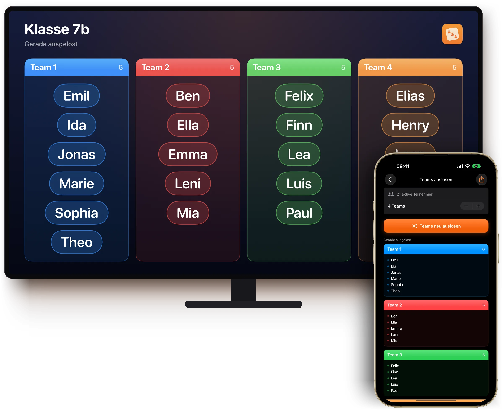
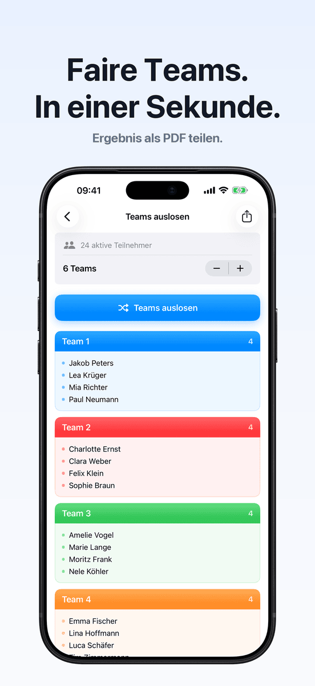
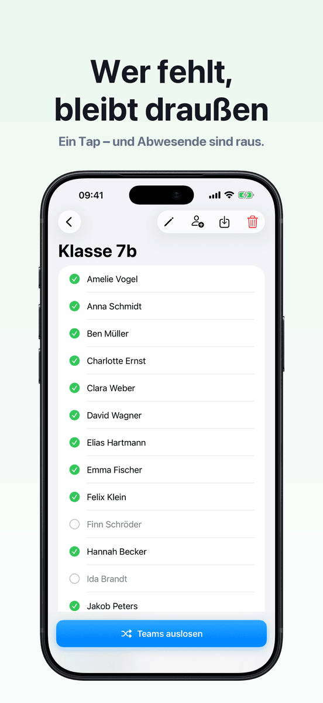
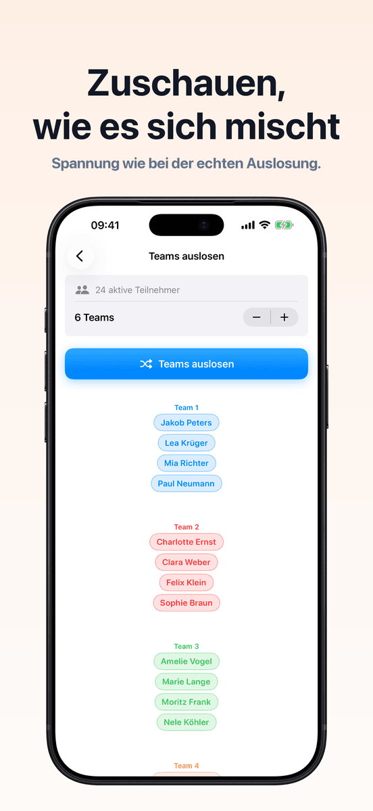
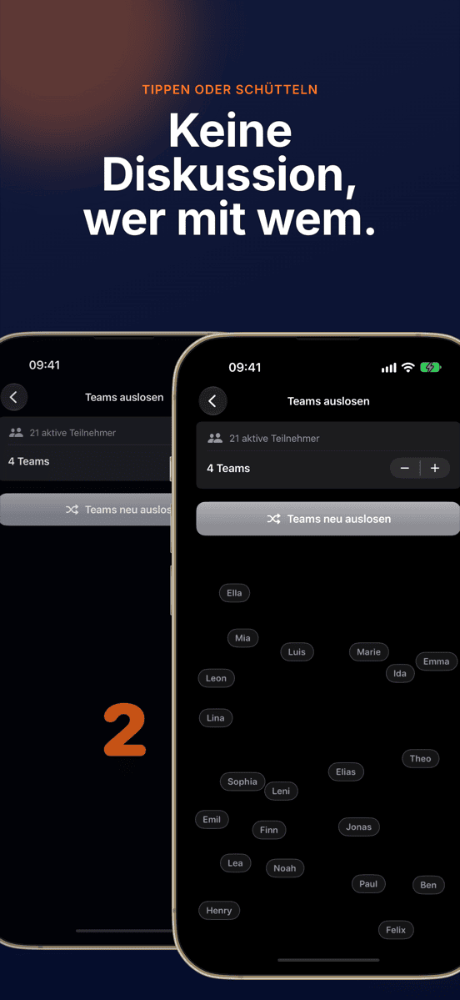
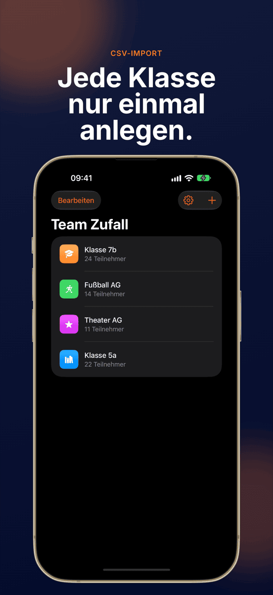
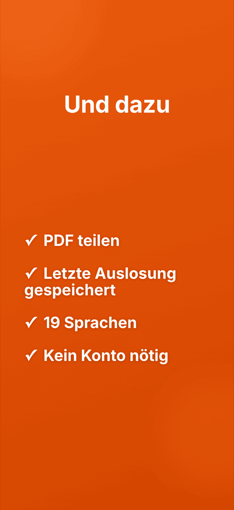

NeuLive auf dem Beamer
Team Zufall
Faire Teams. In einer Sekunde.







Auslosen ohne Diskussion.
Live auf dem Beamer
Per AirPlay oder Kabel sieht die ganze Klasse zu, wie die Teams entstehen.
Ein Tippen, fertig
Alle werden gleichmäßig und zufällig auf die Teams verteilt.
Gruppen bleiben gespeichert
Klasse, Training oder Verein einmal anlegen und immer wieder auslosen. Die letzte Auslosung jeder Gruppe bleibt erhalten.
Wer fehlt, bleibt draußen
Abwesende wählst du mit einem Tipp ab, die Auslosung überspringt sie.
Teamzahl frei wählbar
Zweier, Dreier, Vierer oder größere Teams.
Sichtbar gemischt
Eine Animation mischt alle Namen sichtbar. Schütteln startet eine neue Runde.
So einfach geht’s.
Gruppe anlegen
Namen eintippen oder als CSV importieren.
Abwesende abwählen
Ein Tipp pro Name, der heute fehlt.
Auslosen
Teamzahl wählen, tippen, zuschauen.
Zeigen
Beamen oder als PDF teilen.
Zum Weiterlesen
Häufige Fragen
Wie teile ich eine Gruppe zufällig in Teams auf?
Lege deine Gruppe einmalig in Team Zufall an, trage die Teilnehmer ein und tippe auf „Teams auslosen". Die App verteilt alle gleichmäßig und zufällig auf die gewählte Anzahl Teams — in Sekunden.
Für wen ist Team Zufall geeignet?
Für alle, die regelmäßig Gruppen in Teams aufteilen: Lehrkräfte, Trainer, Seminarleiter, Vereinsverantwortliche oder Eventorganisatoren.
Kann ich die Teamgröße selbst festlegen?
Ja. Du bestimmst, wie viele Personen ein Team haben soll — 2er, 3er, 4er Gruppen und mehr sind möglich. Team Zufall verteilt die Teilnehmer entsprechend gleichmäßig.
Werden meine Daten gespeichert oder übertragen?
Nein. Alle Gruppen und Teilnehmernamen bleiben ausschließlich lokal auf deinem Gerät. Es werden keine Daten an externe Server übertragen.
Kann ich Namenslisten aus Excel importieren?
Ja. Exportiere die Liste als CSV aus Excel oder Google Sheets und importiere sie direkt in Team Zufall — die ganze Klasse oder Mannschaft ist in Sekunden angelegt.
Kann ich die Auslosung auf dem Beamer zeigen?
Ja. Ist dein iPhone oder iPad per AirPlay oder Kabel mit Beamer, Apple TV oder Monitor verbunden, zeigt Team Zufall die Auslosung dort live und im Querformat. Bedient wird weiter auf dem Gerät.
Was kostet Team Zufall?
Laden und die erste Auslosung sind gratis. Für weitere Auslosungen brauchst du das Pro-Abo, monatlich oder jährlich. Das Abo kannst du vorher kostenlos testen. Team Zufall läuft auf iPhone und iPad ab iOS 17.